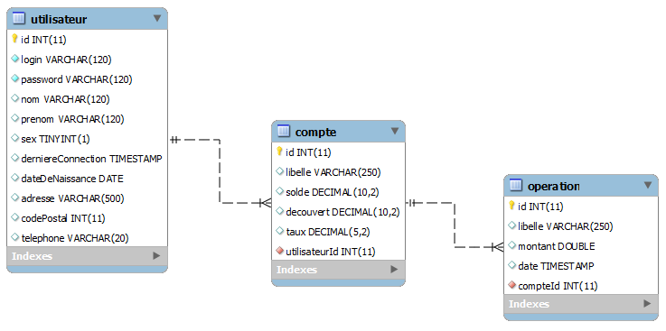
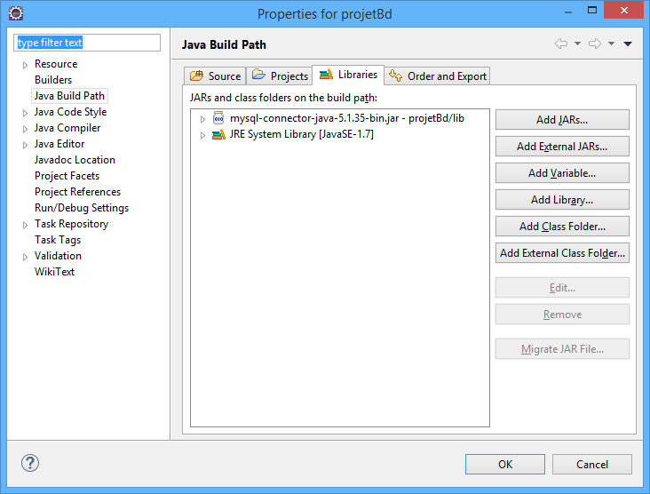

Accès à une base de données en JDBC, mise en place d'un ORM.
Installez une base MySQL sur votre ordinateur, téléchargez MySQL sur http://dev.mysql.com/downloads/
Lors de l'installation, notez bien le mot de passe que vous aurez choisi pour l'utilisateur root.
Lancez l'utilitaire Workbench et importez la base qui se trouve dans le dosser db de l'exercice, fichier banque.sql.
La base se compose de trois tables, un utilisateur peut posséder des comptes. Un compte n'appartient qu'a un seul utilisateur. Les comptes peuvent générer des opérations. Une opération n'est liée qu'a un seul compte.
HSQL est une base de données relationnelle mémoire/fichier elle est gratuite et téléchargeable sur http://hsqldb.org/
N'installez pas HSQL si vous avez déjà installé MySQL, une seule base suffit. Mais si l'installation de MySQL n'est pas possible sur votre poste faites usage de HSQL.
Vous pouvez la lancer via le script startdb.bat qui se trouve dans le dossier HSQL de l'exercice. Il démarrera la base de données.
Ne fermez pas la fenêtre DOS qui s'ouvre, cela terminerait la base.
Après son lancement, pensez à l'initialiser en lançant le scripte initdb.bat. Cette initialisation ne se fera qu'une seule fois.
Lors des exercices, vérifiez que la base est lancée avant de tenter d'y accéder.
Hormis dans le cas de ODBC Windows, il nous faut un driver afin que le code Java puisse accéder aux données qui sont dans la base
Le driver est dépendant de la base, vous en avez pour Oracle, DB2, MySQL, SQL Server ..., on peut les télécharger sur le site de chaque éditeur.
Regardez sur le site de l'éditeur de votre base, la version et le nom du driver Java
Pour MySQL il se trouve sur http://dev.mysql.com/downloads/connector/j/.
Pour HSQL il se trouve sur http://hsqldb.org.
Vous pouvez aussi regarder sur le repository Maven
Créez un nouveau projet Maven dans Eclipse, projetBd.
Reprenez le même fichier pom.xml que dans les exercices précédents.
Indiquez dans votre fichier pom.xml la dépendance vers le driver Java via l'usage des dependency :
<project>
...
<dependencies>
<-- Pour la base MySQL -->
<dependency>
<groupId>mysql</groupId>
<artifactId>mysql-connector-java</artifactId>
<-- Vous pouvez changer le numero de version -->
<version>5.1.40</version>
</dependency>
<-- Pour la base HSQL -->
<dependency>
<groupId>org.hsqldb</groupId>
<artifactId>hsqldb</artifactId>
<-- Vous pouvez changer le numero de version -->
<version>2.3.4</version>
</dependency>
</dependencies>
</project>
Rappel : Après toutes modifications faites sur le fichier pom.xml, faites un clic droit sur votre projet puis Maven - Update Project ...
Si vous ne voulez pas faire de projet Maven, vous pouvez faire un projet Java standard, File / New / Project / Java Project, donnez-lui le nom de projetBd
Créez un répertoire lib dans ce nouveau projet
Placez (copiez/collez) dedans le JAR représentant votre driver JDBC (dans notre cas, c'est le fichier mysql-connector-java-x.x.xx-bin.jar ou hsqldb-2.x.x.jar)
Nous devons indiquer à notre projet qu'il doit charger le JAR, dans Eclipse faites un clic droit sur votre projet, allez dans le menu Properties (tout en bas).
Puis, Java Build Path, onglet Libraries, cliquez sur le bouton Add JARs..., indiquez le chemin vers votre JAR qui a été placé dans lib.
Toujours dans le projetBd, créez une nouvelle classe fr.TestDB01.
package fr;
// TOUS VOS IMPORT LIES AU JDBC DOIVENT PROVENIR DE :
import java.sql.*;
public class TestDB01 {
// Cette classe n'a aucun attribut
...
}
Dans un premier temps, nous allons coder de manière linéaire, c'est à dire que nous allons consommer de l'objet.
Ajoutez une méthode public static void main(String[] args) à votre classe Java.
public static void main(String[] args) {
...
}
Dans cette méthode on veut :
...
public static void main(String[] args) {
// Nom du driver pour acceder a la base de donnees.
// Lire la documentation associee a sa base de donnees pour le connaitre
final String dbDriver = "xxx.xxx.Xxx"; // Nom long d'une classe
// URL d'access a la base de donnees.
final String dbUrl = "xxx:xxx:xxx://xxx/banque"; // banque est le nom de la base
// Login d'access a la base de donnees.
final String dbLogin = "root"; // Ou "SA" en HSQL
// Mot de passe d'access a la base de donnees.
final String dbPwd = "root"; // Ou "" en HSQL
...
}
...
try {
Class.forName(dbDriver);
} catch (Exception e) {
e.printStackTrace();
}
...
...
Connection connection = null;
Statement request = null;
ResultSet resultat = null;
try {
connection = DriverManager.getConnection(dbUrl, dbLogin, dbPwd);
...
...
request = connection.createStatement();
resultat = request.executeQuery("a vous de faire la requête SQL");
...
...
while (resultat.next()) {
String nom = resultat.getString("nom");
String prenom = resultat.getString("prenom");
System.out.println(nom + " " + prenom);
}
...
...
} catch (SQLException e) {
e.printStackTrace();
} finally {
if (resultat != null) {
try {
resultat.close();
} catch (SQLException e) {
e.printStackTrace();
}
}
if (request != null) {
try {
request.close();
} catch (SQLException e) {
e.printStackTrace();
}
}
if (connection != null) {
try {
connection.close();
} catch (SQLException e) {
e.printStackTrace();
}
}
}
...
Lancez votre classe et validez que tout fonctionne bien.
Il va nous falloir récupérer les classes réalisées dans l'exercice 10.
Afin de faire simple, copier coller toutes vos classes de l'exo10 dans l'exo11. Si vous êtes en Maven, vous pouvez aussi réaliser un projet multi modules afin de créer des dépendances entre vos projets. Vous pouvez importer l'exemple dans l'énoncé de l'exercice (en11.banque.jdbc.mysql.modules).
Toujours dans la même lignée, créez une seconde classe fr.TestDB02.
On veut maintenant que la requête récupère toutes les informations de la table utilisateur.
Mais on ne veut pas les afficher, on veut fabriquer une liste (java.util.List) d'objets Client (ce qui donne une java.util.List<Client>).
On fait ici de l'ORM (Object Relational Mapping).
Vous devrez résoudre la problématique suivante : dans votre objet vous avez un age sous forme d'entier, dans la base vous avez une date de naissance.
Vous pouvez :
Dans tous les cas, faites attention, tous les utilisateurs n'ont pas obligatoirement de date de naissance.
Créez une troisième classe fr.TestDB03.
On veut maintenant que la requête récupère toutes les informations des comptes rattachées à un utilisateur.
Comme dans fr.TestDB02, on ne veut pas les afficher, on veut fabriquer une liste (java.util.List) d'objets Compte (ce qui donne une java.util.List<Compte>).
Attention : vous devrez gérer les cas des comptes rémunérés, comptes à seuils, comptes à seuils rémunérés. Vous ferez usage du polymorphisme et testerez si les données en base sont null ou pas (faites usage de la méthode wasnull() de la classe ResultSet ou utilisez getObject(...)).
Créez une quatrième classe fr.TestDB04.
On veut maintenant que la requête récupère toutes les opérations associées à un compte.
Comme dans fr.TestDB02, on ne veut pas les afficher, on veut fabriquer une liste (java.util.List) d'objets Operation (ce qui donne une java.util.List<Operation>).
Commencez par créer la classe fr.banque.Operation, si elle n'existe pas, elle servira à représenter les données qui sont dans la table operation.
Un attribut = une colonne, respectez le typage de votre base.
Réfléchissez à comment transformer nos 4 classes fr.TestDBXX en une seule pourvues de méthodes et d'attributs.
Par exemple elle pourrait avoir les méthodes :
Réfléchissez aussi aux attributs de votre nouvel objet, par exemple login,password,url ... et pourquoi.